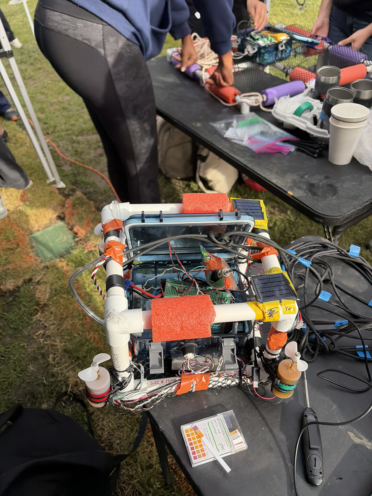

Autonomous Underwater Vehicle for Depth-Resolved Water Quality Sensing
For my E80 engineering design project, my team designed and built an autonomous underwater vehicle to measure how water quality changes with depth near Dana Point. Because many environmental measurements are taken only at the surface, our goal was to create a low-cost system that could collect depth-resolved data in real-world ocean conditions. The vehicle used a pressure sensor to calculate depth, a thermistor to measure temperature, a pH sensor to monitor acidity, and solar panels to estimate light intensity underwater.
The main design challenge was achieving stable vertical motion while keeping the electronics waterproof, protected, and properly oriented for sensing. We designed the system around controlled vertical movement so that sensor data could be analyzed as a function of depth rather than only time. This allowed us to compare expected trends, ground-truth measurements, and deployment data to better understand how environmental conditions vary below the surface.
Through this project, I gained experience with sensor calibration, waterproofing, embedded data logging, control design, experimental validation, and engineering communication. The project also connected my interests in engineering, public health, and environmental monitoring by showing how low-cost sensing systems can make water quality data more accessible.
